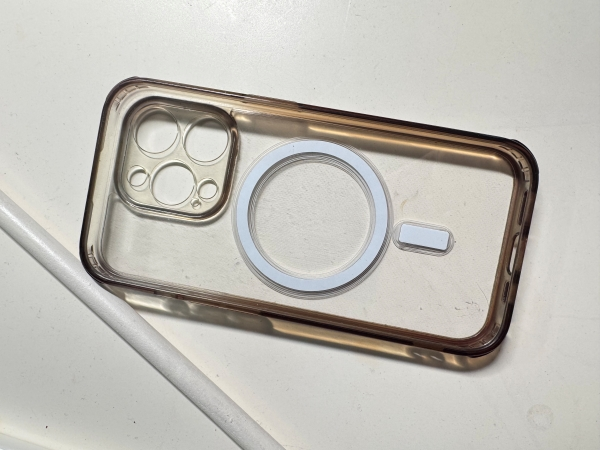
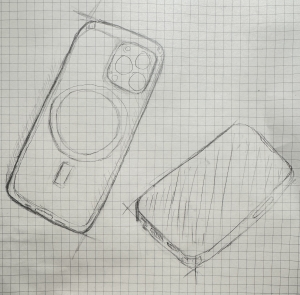

Item of the Week: Phone Case
Description
This item is a clear phone case designed for the iPhone 15. It is lightweight, and shaped as a beveled rectangle. The edges of the case are a brownish-orange hue, while the back is largely transparent, patterned with tiny white dots. The back also contains a white circle and line symbol, and a small area designed for the cameras of the phone. The item as a whole seems to be made of plastic, but the brown edges are more flexible while the transparent back is hard to the touch.
I got this item from my dad when I upgraded my phone, though exactly how I got it would be best saved for the anecdote.The main reason why I am getting rid of it is out of personal taste; I prefer more solid phone cases over the transparent, semi-flexible designs.
Anecdote
During winter break, I was on vacation with my family, and a conversation came up about phones. My dad loves taking photos so he regularly gets a new phone in order to upgrade storage size and store more photos. I don't use my phone that much as I generally prefer my computer, so naturally I was not as enthused when it came to new phones. However, at some point the topic of Wi-Fi came up, and I turned up to complain that "Well, my phone can't connect to Wi-Fi anymore. I've been relying on cellular for the past few months."
As it so happens, my phone was the iPhone 7, a phone that was over ten years old at that point. Remarkably, it was still quite reliable for all my texting needs, but has been slowly dying on the Internet and web-surfing front. As such, we agreed to get a new phone for my dad and I would have his iPhone 15. I had begrudgingly finally upgraded my decade old phone, and so I inherited a transparent case that would be discarded once I got my own case.
Funnily enough, it turned out that my old phone could still connect to Wi-Fi; it was only broken because of defunct settings.
Research
This phone case has a particular function, being compatible with Apple's MagSafe According to Apple Insider and the wikipedia article, MagSafe itself was developed for iPhone 12 and newer, starting off with supporting 15 watts. This is where the circle and line symbol originally came from in the back of the case; it contains magnets that help with the wireless charging function.
The first commercial portable phone came with a protective leather case!